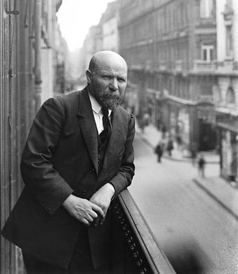
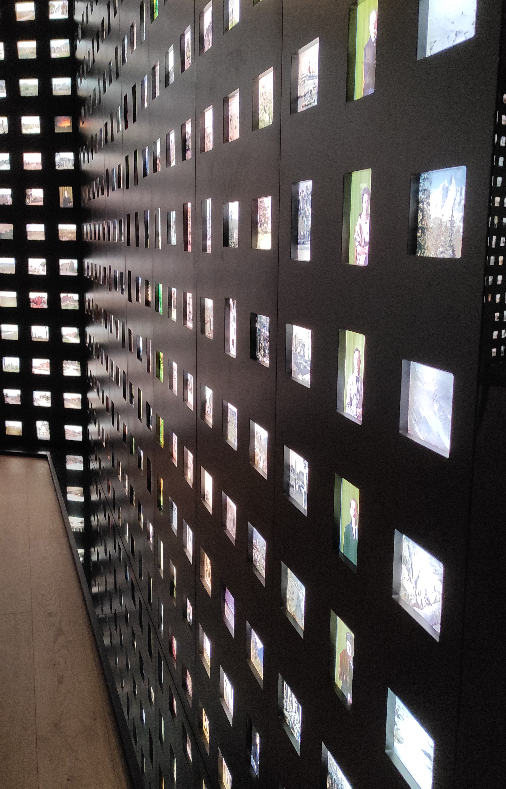
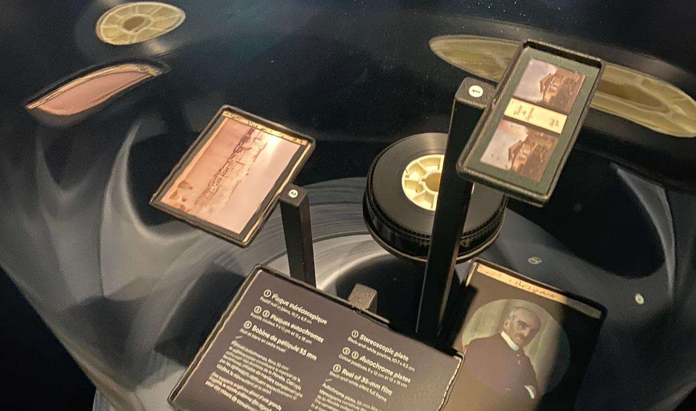

Albert Kahn, né Abraham Kahn à Marmoutier en Alsace
le 3 mars 1860 et mort à Boulogne-Billancourt le
14 novembre 1940,
est un banquier et philanthrope français. Il a rassemblé un important
fonds iconographique intitulé Archives de la Planète, collection
constituée d'autochromes (photographies en couleurs sur plaques de verre)
la plus importante au monde, et de films en noir et blanc,
fonds conservé au musée départemental Albert-Kahn.
Visant à faire connaître et valoriser l'œuvre d'Albert Kahn, il
conserve la collection des « Archives de la Planète » constituées par
Albert Kahn entre 1909 et 1931 (72 000 photographies couleur sur plaques
autochromes, ce qui en fait la plus importante collection au monde de
ce type, 184 000 mètres, soit une centaine d'heures de film noir et
blanc et couleur, 4 000 plaques stéréoscopiques noir et blanc) et d'un
jardin à scènes paysagères étendu sur près de quatre hectares faisant
partie intégrante des collections du musée.
Depuis 2015, le jardin dans sa totalité, la maison d'Albert Kahn au numéro
6 du quai du 4-Septembre, la Société Autour du Monde au 9 quai 4-Septembre,
les pavillons japonais et le palmarium sont inscrits à l'inventaire des
monuments historiques.
À partir de septembre 2016, de grands travaux sont entrepris sous la direction
de l'architecte Kengo Kuma, pour la construction d'un bâtiment d'exposition de
2 300 m² et la rénovation des bâtiments existants, permettant l'accès au public
à un nouveau parcours permanent. Dans le même temps, la collection en ligne des
Archives de la Planète, comportant 65 000 images, est accessible sur le portail
Collections.
Le jardin a été fermé au public de 2016 à 2019. Il a rouvert aux publics à l'occasion
des Journées européennes du patrimoine le 20 septembre 2019, avec une mise en lumière
de certaines scènes paysagères.
Le nouveau musée, l'ancienne galerie d'exposition réhabilitée ainsi que les bâtiments
patrimoniaux rouvrent au public le 2 avril 2022 avec un nouveau parcours de visite, un
espace dédié aux expositions temporaires, un espace de découverte pour les familles, un
auditorium de 100 places, un centre de documentation, une salle pour les ateliers
pédagogiques, une boutique ainsi qu'un espace de restauration.
Le Musée Albert Kahn
Après la faillite de la banque Kahn en 1932 à la suite de la crise de
1929, la propriété d'Albert Kahn est saisie en 1933. En 1936, elle est
acquise par la préfecture de la Seine, puis les Archives de la Planète
en 1939. En 1937, les jardins sont ouverts au public et les projections
d'autochromes reprennent. Le département des Hauts-de-Seine, à la suite
de sa création en 1968, devient propriétaire du site et des collections
dont il est garant de la conservation. Le musée départemental Albert-Kahn
est aujourd'hui un service du conseil départemental des
Hauts-de-Seine et le financement est intégralement départemental.


Le Jardin d'Albert Kahn
Le jardin a été créé par Albert Kahn sur des terrains
acquis à partir de 1895, confiant une partie des travaux
aux architectes-paysagistes Henri et Achille Duchêne.
Jusqu'en 1910, il élabore sur 3,9 hectares un ensemble
de scènes paysagères aux styles différents, dont
l'ensemble forme un jardin à scènes, style
caractéristique de la fin du xixe siècle.
Albert Kahn croyait à la paix universelle. Pour appuyer
son utopie, il crée un jardin fait de plusieurs scènes
réconciliant les styles de chaque pays.